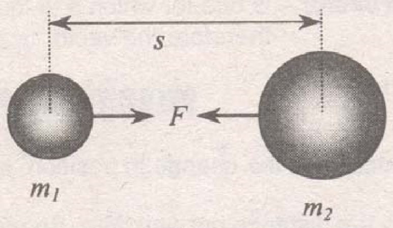
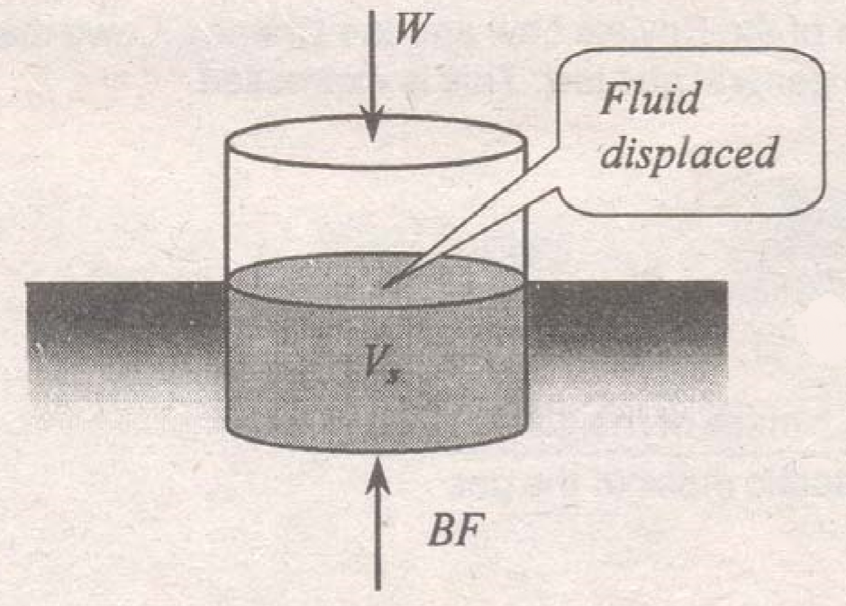

Vector quantities - are quantities whose measurement is specified by magnitude and direction. The following are examples of vector quantities: Weight, momentum, torque, velocity, displacement, acceleration, electric field intensity, etc.
Scalar quantities - are those quantities which have only magnitudes. The following are examples of scalar quantities: Speed, mass, volume, energy, length, temperature, etc.
Vector - is the line whose length indicated to scale the magnitude of the vector quantity and whose direction indicates the direction of the quantity. The term "vector" comes from Latin "vehere" which means "to carry".
Classifications of vectors:
Displacement - is the change in position, specified by a length and a direction.
Speed - is the distance per unit time. Speed is a scalar quantity.
Velocity - is the displacement per unit time. Velocity is a vector quantity.
Acceleration - is the change of velocity per unit time.
Instantaneous acceleration - is the time rate of change of velocity.
Uniform accelerated motion - is defined as the motion in a straight line in which the direction is always the same and the speed changes at a constant rate.
Three Laws of Motion: These laws are commonly known as "Newton's Laws of Motion".
Newton's First Law: (The law of inertia)
"There is no change in the motion of a body unless an unbalanced external force is acting upon it."
Newton's Second Law: (The law of acceleration)
"Whenever a net (resultant) force acts on a body, it produces an acceleration in the direction of the resultant force that is directly proportional to the resultant force and inversely proportional to the mass of the body."
$$F=ma$$
Newton's Third Law: (The law of reaction)
"For every force that acts on one body there is a second force equal in magnitude but opposite in direction that acts upon another body."
Law of Universal Gravitation:
"Every particle in the universe attracts every other particle with a force that is directly proportional to the product of the masses of the two particles and inversely proportional to the square of the distance between their centers of mass."

$$F=\frac{Gm_{1}m_{2}}{s^{2}}$$
Where: G = gravitational constant = $6.670 \times 10^{-11}N-m^{2}/kg^{2}$
Inertia - is the property of the body by virtue of which a resultant force is required to change its motion.
Weight (of a body) - is the resultant gravitational force acting on the body due to all other bodies in space. It is always a vertical force acting downward.
Newton (N) - is the force that will give to a mass of one kilogram an acceleration of one meter per second per second.
Dyne (dyn) - is the force that will give to a mass of one gram an acceleration of one centimeter per second per second.
Poundal - is the force that will give to a mass of one pound an acceleration of one foot per second per second.
Slug - is the mass to which a force of one pound will give an acceleration of one foot per second per second.
Gram force - is one-thousandth the pull of the earth upon a standard kilogram at a place where g has a value of 980.665 cm/s2.
Work - is the product of force and the displacement in the direction of the force.
$$W=\text{Force} \times \text{distance}$$
Energy - is the property of the body or system of bodies by virtue of which work can be done. It is also defined as the ability to do work. Energy is a scalar quantity.
Potential energy - is also known as the energy of position or configuration.
$$E_{p}=Wh = mgh$$
Kinetic energy - is the energy in motion.
$$E_{k}=\frac{1}{2}mv^{2}$$
Frictional force - a force acting on the body whenever it moves while in contact with another body. This force always opposes the direction of the motion. The frictional force is proportional to the normal force and is directed parallel to the surface.
$$F=\mu N$$
where: $\mu = \text{coefficient of friction}$
Coefficient of kinetic friction - is the ratio of the frictional force to the perpendicular force pressing the two surfaces together.
$$\mu_{k}=\frac{F}{N}$$
Coefficient of static friction - is the ratio of the limiting frictional force to the normal force.
$$\mu_{s}=\frac{F_{\text{max}}}{N}$$
Law of Conservation of Energy:
"Energy can neither be created nor destroyed; it merely changes from one form to another."
Transformation of Kinetic & Potential Energy:
Potential Energy = Kinetic Energy
$$mgh=\frac{1}{2}mv^{2} \ \ \ \ \text{or} \ \ \ \ v=\sqrt{2gh}$$
Transformation of Work & Kinetic Energy:
Work = Kinetic Energy
$$Fs=\frac{1}{2}mv^{2}$$
Power - is the time rate of doing work.
$$P=\frac{W}{t}$$
Momentum - is the product of the mass and velocity of a body. Momentum is a vector quantity.
$$p=mv$$
Impulse - is the product of the force and the time during which it acts. Impulse is equal to the change in momentum.
$$\text{Impulse}=F\Delta t=p_{2}-p_{1}=mv_{\text{final}}-mv_{\text{initial}}$$
Law of Conservation of Momentum:
"If there is no net external force acting upon a system of bodies, the momentum of the system does not change."
Elastic collision - is a collision of two bodies in which kinetic energy as well as momentum is conserved.
Inelastic collision - is a collision of two bodies in which only the momentum is conserve but not the kinetic energy.
Coefficient of restitution - is the negative ratio of the relative velocity after collision to the relative velocity before collision.
$$e=-\frac{v_{2A}-v_{2B}}{v_{1A}-v_{1B}}=\frac{v_{2A}-v_{2B}}{v_{1B}-v_{1A}}$$
If e = 1, the collision is perfectly elastic while if e = 0, the collision is completely inelastic.
Boyle's Law: "If the temperature remains constant, the product of the pressure and volume is constant." This was named after Irish physicist Robert Boyle (1627-1691).
$$PV=k$$
Charles' Laws: "If the volume of a confined gas is constant, the pressure is directly proportional to the absolute temperature."
$$\frac{P_{1}}{T_{1}}=\frac{P_{2}}{T_{2}}$$
"If the pressure of a confined gas is constant, the volume is directly proportional to the absolute temperature."
$$\frac{V_{1}}{T_{1}}=\frac{V_{2}}{T_{2}}$$
General Gas Law: The combination of the Boyle's Law and the Charles' Laws may be regarded as the general gas law. This is expressed mathematically as
$$\frac{P_{1}V_{1}}{T_{1}}=\frac{P_{2}V_{2}}{T_{2}} \ \ \ \ \text{or} \ \ \ \ PV = nRT$$
where: $n = \dfrac{m}{W}= \dfrac{\text{mass of the gas}}{\text{atomic mass of the gas}}$
R = universal gas constant
Density - is the mass per unit volume. This is expressed mathematically as $$\rho=\frac{m}{V}$$
Weight density - is the weight per unit volume. The relationship between density and weight density is expressed in the following equation.
$$D=\frac{W}{V} \ \ \ \ \ \ \ D=\rho g$$
Specific gravity - is the density of the substance relative to that of water. This is also known as relative density. Water is considered the standard substance which has a maximum density at $4^{\circ}C$.
$$\text{specific gravity}=\frac{\text{density}}{\text{density of water}}$$
The values for the density of water are as follows:
62.4 pounds/ft3
1000 kg/m3
9.81 kN m3
9810 N m3
1 gram/cc
The specific gravity of water at densed condition ($4^{\circ}C$) is 1.0
Archimedes' Principle: "When a body is immersed (partially or wholly) in a fluid, it is subjected to an upward force (buoyant force) which is equal to the weight of the fluid displaced." This was discovered by Greek mathematician and inventor, Archimedes (287 - 212 B.C.).

$$BF=\rho V_{s}$$
where:
$V_{s}$ = volume submerged
$\rho$ = density of the fluid
Also by equilibrium, the buoyant force is equal to the weight of the body, thus
$$BF=W$$
Note: The buoyant force is always acting at the centroid (center of gravity) of the submerged volume.